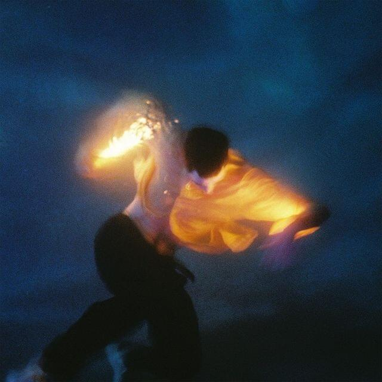
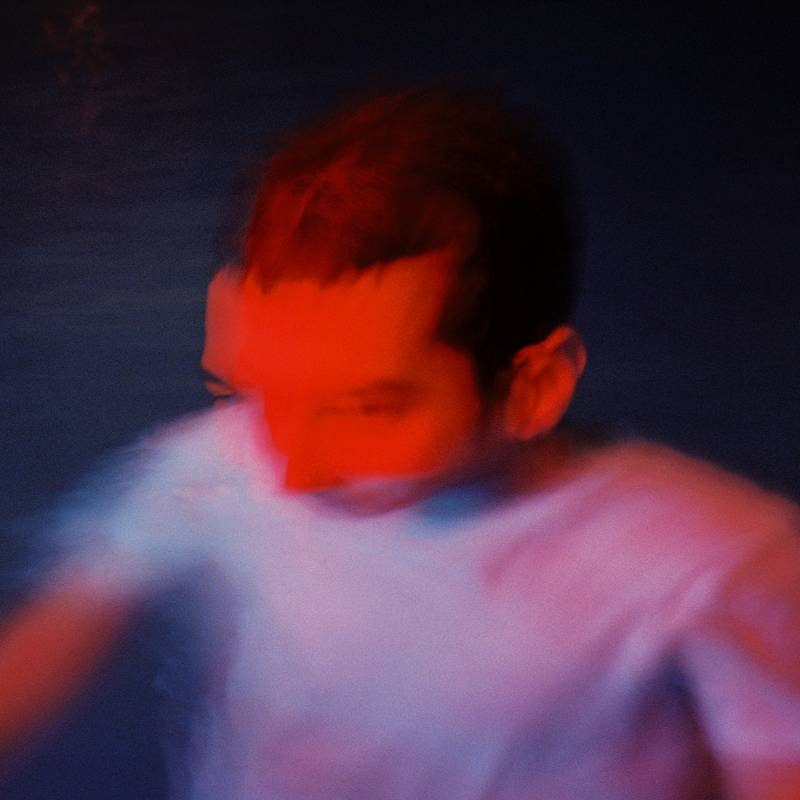

Give Me Your Shoulders, Pt.1
Released Feb 2022
Musicians:
- Josh Taylor, Lead vocals & Guitar
- Brett Kramer, Drums
- J. Tyler Johnson, Bass Guitar
Give Me Your Shoulders has many layers of intimacy. Physical, emotional, & spiritual. Shoulders are intimate in nature, close to the heart, a place of strength & tell of vulnerability. A sign of how safe i feel, & how close i’m willing to let you be. To shoulder is to accept responsibility, to give your heavy. It is love.. To give what you cannot carry. o accept another’s burden without condition. & to yoke yourself with the author of love & find rest for your soul.


Nothing & Forever
- Make of It / 2:36
- Summerland / 3:50
- What’s Wrong / 2:58
- Everything Machine / 3:18
You & Infinity
- Hot Tea / 2:55
- Move Me / 3:37
- Back Around / 3:45
- TIME 2 / 3:58
- "Give Me Your Shoulders, Pt. 1" is the first of two parts representing half•alive’s second studio album.
- ”Give Me Your Shoulders is Love. To give what you cannot carry. To accept another’s burden without condition. To yoke yourself with the author of Love & find rest for your soul.” Josh Taylor via Total Ntertainment.
- Josh Taylor, performing
- Give Me Your Shoulders Pt,1 had an estimated percentage of 97% by listeners whom liked the album, information was taken from google users. The albums genre is classified as Indie/Alternative pop.